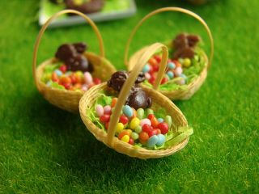
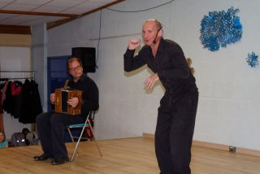

Pour la deuxième année consécutive, l'APE (et surtout Jérôme) a organisé avec l'équipe enseignante les listes de fournitures scolaires pour la rentrée, et à proposé aux parents de commander à prix réduit des fournitures de qualité, préparées et livrées par l'APE.
C'est cette année une trentaine de familles qui a bénéficié de cette action.
L'ensemble des membres de l'A.P.E. Jules Verne remercie tous les parents qui ont pu donner de leur temps pour les aider, ainsi que l'équipe enseignante, pour sa disponibilité.
La kermesse de l'école s'est tenue le 14 juin 2014, avec les spectacles des enfants, et les traditionnels stands dans la salle des sports.
L'ensemble des membres de l'A.P.E. Jules Verne remercie tous les parents qui ont pu donner de leur temps pour les aider, ainsi que l'équipe enseignante, pour sa disponibilité.
Le 19 avril 2014, les enfants de Chevaigné ont pu participer à une chasse aux oeufs, organisée par l'APE.
Trois itinéraires plus ou moins long avaient été élaborés par Sinje Stark.
Le long de ces parcours, des CDs avaient étés cachés. Les enfants devaient alors pointer sur un plan les CDs découverts lors du trajet afin de gagner un oeuf en chocolat.
La chasse s'est achevée par un tirage au sort permettant à quelques veinards de gagner de gros lots...en chocolat bien sûr!
C'est le samedi 29 mars que l'association des parents d'élèves a donné rendez vous aux familles et aux enseignants pour le traditionnel dîner spectacle du mois de mars.
Cette année, c'est un repas réunionnais que nous avons confectionné grâce à Sophie Leibovitsch, pour le plus grand plaisir de tous. La classe de CM1 a présenté une danse, des contes Tsiganes ont été racontés par Jean-François Michau, accompagné à l'accordéon par Yann Fanch Perroches. Et c'est avec le concours de quatre parents musiciens, Gérald, Pierre, Gwénael et Christophe, que la soirée a pu s'achever sur des airs de musique bretonne.
L'ensemble des membres de l'A.P.E. Jules Verne remercie tous les parents qui ont pu donner de leur temps pour les aider, ainsi que l'équipe enseignante, pour sa disponibilité.
